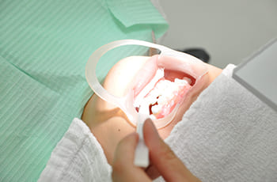
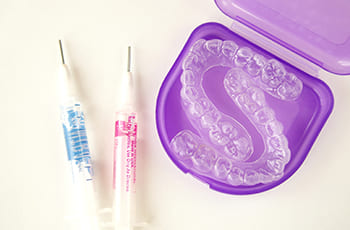
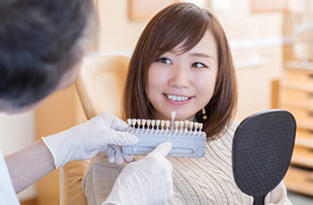
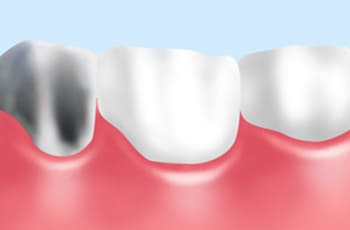
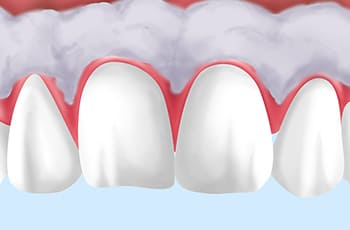
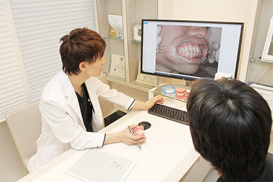
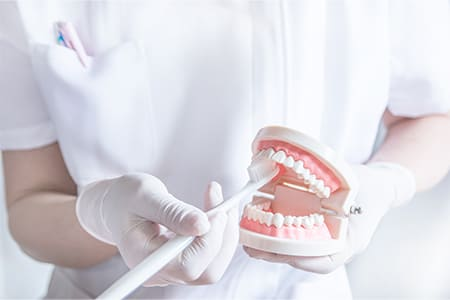

- 新宿の歯医者・矯正歯科「新宿ルーブル歯科・矯正歯科」TOP
- ホワイトニング
ホワイトニングで
白くて美しい歯へ
どんなに丁寧なブラッシングをしていたとしても、歯は徐々に黄ばんでいきます。特に加齢による黄ばみは、歯のクリーニングや市販のクリーニング剤で改善することは難しいものです。
また、市販の歯磨き粉やホワイトニング剤、サロンでのホワイトニングでは歯の表面のみしか白くできません。一時的に白くはなるものの、すぐに黄ばんでしまいます。
新宿の歯医者「新宿ルーブル歯科・矯正歯科」では、歯科医師だけが取り扱える過酸化水素を使用し、歯の内部までしっかりと白くできます。黄ばみを除去し、天然の白く美しい歯を手に入れたいとお考えなら、当院のホワイトニングをご検討ください。
当院で行うホワイトニングの流れ
当院では、ホワイトニング前にPMTCにより歯の表面をクリーニングします。この処置により歯の持つ本来の白さに近づけた後に、患者さまにご確認いただきます。その後、内部まで白くして再度ご確認いただくことで、ホワイトニングの効果を実感していただくことができます。ホワイトニング治療時には知覚過敏抑制剤（しみ止め）を使用するため、痛みを感じることはほぼありません。
ホワイトニング後、歯が白くなることで歯並びが目立ち矯正したいと希望する患者さまも多くいらっしゃいます。当院では矯正治療にも力を入れていますので、お気軽にご相談ください。
ホワイトニングは
こんな方にお勧め
- 成人式や結婚式などのライフイベントが近い方
- お見合いや就活で歯をキレイにしたい方
- パーティーや同窓会、旅行で写真を撮る機会がある方
- 接客業や営業職で人と接する機会が多い方
- 歯の黄ばみや着色汚れにコンプレックスを持っている方
- 若々しい口元の見た目を手に入れたい方
- さわやかで明るい口元にしたい方
- 清潔感ある印象にしたい方
- 笑顔に自信を持ち心から笑いたい方
ホワイトニングの種類
オフィスホワイトニング

歯科医院にて行うホワイトニングです。歯ぐきを保護した上で高濃度のホワイトニング剤を塗布し、特殊な光を照射することで歯を白くする効果を促進させます。即効性が高いことがメリットで、1回の施術で白く美しい歯を手に入れられます。ただし、色が戻りやすいため維持するためには定期的な施術が必要です。
オフィスホワイトニング
33,000円
ホームホワイトニング

ご自宅で気軽に行えるホワイトニングです。まず、当院にて患者さまのお口に合わせたマウスピースを製作します。その後、ご自宅にて薬液を塗布したマウスピースを一定時間装着していただくことでホワイトニングできます。効果を実感するまで時間がかかりますが、ホワイトニング後に歯の白さが長続きしやすい点がメリットです。
ホームホワイトニング両顎
（マウスピース+初期の薬剤）
33,000円
デュアルホワイトニング

オフィスホワイトニングとホームホワイトニングを併用し、それぞれのメリットにより高いホワイトニング効果を得られる方法です。デュアルホワイトニングならば、短期間で白く美しい歯を手に入れることができて効果も長続きします。何度も施術するのが面倒、しっかり白くしたいという方にお勧めです。
ウォーキングブリーチ

虫歯や外傷などにより歯の神経が失われた歯は暗い色に変色し、通常のホワイトニングでは歯を白くすることができません。そのようなケースではウォーキングブリーチが効果的です。神経が失われた歯の内部に漂白剤を入れることで歯の内側から白くすることができます。神経のない歯の変色が気になる、削らずに白くしたい方はご検討ください。
ウォーキングブリーチ
33,000円
ガムブリーチ

歯ぐきの黒ずみや変色を改善したいとお考えならば歯ぐきのホワイトニングであるガムブリーチがお勧めです。専用の薬剤やレーザー照射により黒ずみの原因であるメラニンを除去し、健康的なピンク色の歯ぐきを取り戻すことができます。着色が深い場合は何回かに分けて通院する必要がありますので、まずはお口の状態を確認させてください。
ホワイトニングと一緒に
歯の健康チェックを

ホワイトニングは治療ではなく白くする施術です。健康な状態で気軽にご来院いただくことができ、歯のクリーニングを行うのと同時にお口の中の健康チェックも行えます。
歯が白くなり口元がキレイになれば自信につながります。さわやかさや清潔感がアップすることで周囲の印象も良くなり、「ホワイトニングで人付き合いが楽しくなった」という方もたくさんいらっしゃいます。また、歯に関心を持たれて定期検診をご希望される患者さまもいらっしゃるほどです。美しい歯とともにお口の健康にもつながる、そんなホワイトニングをぜひお試しください。
歯の白さとともに形も整えるなら
セラミック治療がお勧め

セラミック治療はホワイトニングよりももっと白くしたい、白さをずっと保ちたい、歯の形も整えたい、という方にお勧めの治療です。
セラミック治療では患者さまの理想の白さを実現でき、軽微な歯並び改善も行うことができます。さらに、歯の形を整えることで見た目だけでなく噛み合わせなどの機能性も高められます。また、ホワイトニングでは白くしきれない歯がある場合も、セラミック治療であれば白くすることが可能です。
当院では見た目・機能性を両立させるセラミック治療をご提供しています。気になる方はぜひご相談ください。